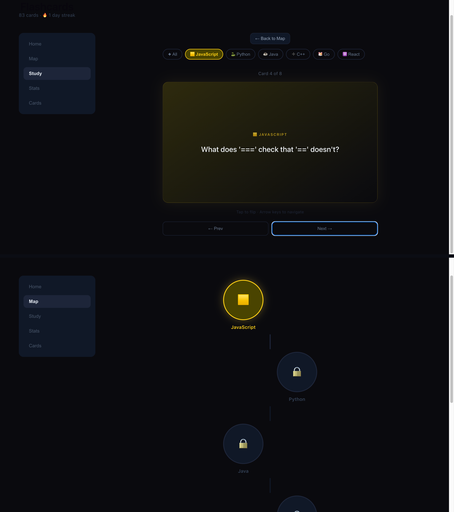

01 · AI Study Tool
Flashcards v2
Turning dense material into the right questions, spaced repetition and a gamified level map, powered by the Anthropic API.
Problem
Passive re-reading doesn't stick, and turning a wall of source material into good recall questions by hand is slow and inconsistent.
Approach
An Anthropic API pipeline generates targeted questions from any material, layered with spaced repetition scheduling and a gamified level map that rewards showing up.
Outcome
Study sessions that build the right questions automatically and make daily practice feel like progress instead of a chore.